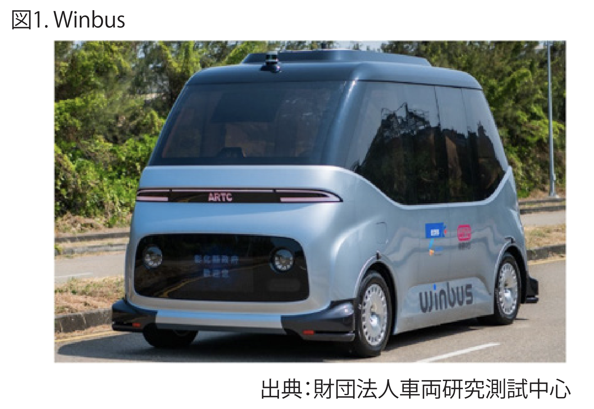

台湾の自動運転車産業は、国内需要規模に限りがあり欧米や日本の自動車メーカーのような大規模資本投入は難しい。一方
で ICT 産業や自動車向け電子部品に強みを持つことから、まずは主要部品・サブシステムおよびニッチ車両市場から検討を始め、
徐々に技術検証や公道試験へと移行させ、多元的モデル計画により産業化推進と一般市民の認知度向上をめざしている。
TSMC、LITE-ON、SUNPLUS、PixArt、Acer、HAITEC、MediaTek、Kingwaytek 等台湾の IT 大企業はこの潮流に乗るべく率先
して車載分野に進出している。
国家実験研究院科技政策研究及びデータセンターの予測によれば、2025 年の自動運転技術は 23 の産業分野で台湾において
2,887.03 億元の生産額を創出するとみられており、主要生産項目は自動車部品比率が 59％と最大であり、次に鉄鋼が 11％、
その他金属が 6％を占める。
Society of Automotive Engineers（以下SAEと略）の定義
によると、自動運転機能のないレベル0から完全自動運転のレベ
ル5まで、またアメリカ運輸省が2016年9月に自動運転に関する
連邦政府の指針を発表し、SAEのレベル定義を採用した。
自動運転レベル3の人と機械との作業分担において、責任所
在が議論の対象となり、また各国法規改正の問題にも直面して
いる。そのため現在の一部メーカーがレベル3とみなす自動運転
の商業量産の実施が困難となっており、直接レベル４以上の車
両とサービスに注力する動きもみられる。例えばWaymoの量産
車両はレベル２であり、Teslaの量産車は既にレベル３である。
日本では内閣官房内組織のIT総合戦略本部が「官民ITS構
想・ロードマップ」を2014年に発表して以来、毎年政策方針を
更新し、各省庁はこのフレームワークに基づき自動運転に関連
する各方面の議論を積極的に行っている。2014年に始まった自
動運転システムの戦略的イノベーション創造プログラム
SIP-adusには、日本の主要自動車メーカーが自動運転の重要
技術発展を目指して集結した。SIP-adus第1期（2014～2018
年）には主要な焦点は「ダイナミックマップ」「HMI」「情報セキュ
リティ」「歩行者事故低減」「次世代都市交通」等の重要５課題
を中心とし大規模な研究や実験を行った。SIP-adus第２期
（2018～2022年）には「実証実験」「技術発展」「社会的受容
性」および「国際協力」など４つの方向性に重点をおいて推進す
ることとしている。日本では自動運転レベル３への発展のため、
2019年に道路交通法改正および道路運送車両法が改正され、
自動運転起動時にスマートフォン使用が可能となるが、ドライ
バーは随時進行状況に注意を払い、緊急時は操作に介入する
責任があるとしており、レベル３量産車の路上走行が日本では
2020年に実現する可能性がある。
中国は2018年に中国初の全国的自動運転試験規定となる
「智能網聯汽車道路測試管理規範」を公布し、14項目の自動運
転機能検証の必要項目を規定した。2019年末までに、22都市
がこれに応え、そのうち多数の都市が国家レベル試験モデル地
区を設立しており、自動運転車路上試験用ナンバー取得件数は
250以上、人を載せた試験は6都市で実施された。2020年中国
工信部は「汽車駕駛自動化分級」を公布し、2021年実施予定と
している。内容はSAE定義とほぼ同じであり、今後の大規模商用
化応用への環境整備に役立つものとなっている。中国の検索エ
ンジン大手バイドゥが開発した自動運転車プラットフォーム「ア
ポロ」を開発し、北京と河北省とでレベル4自動運転路上試験を
実施し、海外自動車メーカーとも積極的に提携を進めている。
台湾では2018年11月30日に「無人載具科技創新条例」が可
決され、この条例を通じて無人運転車両等の産業技術や革新
的サービスの発展促進が期待されている。それと同時に「規制
のサンドボックス」をコンセプトに、特定範囲と条件下において、
この条例により暫定的に関連規制適用外とすることで、台湾の
無人運転車両がイノベーティブな実験を実施しやすい法規制環
境構築を目指している。
経済部推進の下、2019年第4四半期には関連細則法規が制
定され既に交付されている。複数部門間の科学技術産業業務
を統合し、交通科技産業全体の発展を促進するため、2019年9
月に交通部は「交通科技産業会報」を設立し、交通科技産業会
報内にスマート電動スクーター科学技術産業・スマート電動バ
ス科技産業・スマート公共運輸サービス産業・鉄道科技産業・
ドローン科技産業・5Gスマート交通実証エリア・自転車及び観
光旅行産業・スマート物流サービス産業等を含む10の産業
チームを設置した。
同年11月には、コネクテッドカー技術がもたらす5G時代に対
応していくため、交通部はスマート公共運輸計画と旅客運輸業
者がスマート公共運輸サービス関連の応用導入に5年間で300
億元の資金投入を検討している。この計画は2021年から2025
年の間に実施され、交通機関の統合型モバイル決済システム・
大型電動バス・危険運転行為検知や先進的車両安全補助シス
テム・公共運輸モバイルサービス等を含む、旅客運輸業者がス
マート公共運輸サービス関連サービス導入を支援するために継
続的に投入される。
こうした台湾の産官学共同研究を通して国際競争力育成・ス
マート運営環境構築整備といったスマート公共運輸サービス産
業の発展が進み、台湾の公共運輸サービスの向上と関連商品・
サービスの国際市場への進出加速が期待されている。また「交
通科技産業会報」を通じ公共運輸産業と科学技術産業とが協
力する「ナショナルチーム」の産業連携の促進にも期待が寄せら
れている。
現在財団法人車両研究測試中心は経済部の「無人載具科技
創新実験計画」の申請認可を取得した。また自動運転走行サン
ドボックス条例で初めて試運転車両ナンバーを取得し2020年3
月20日から正式に路上走行を開始しており、一年間の「鹿港彰
浜智慧観光接駁」実験計画運営を実施中である。この車両は車
両研究測試中心が2019年に国内のシャーシ・モーター・電源・
車体製造・センサー・判断制御・ネットワーキングやサービス運
営等、各種車両部品・システム・車載電装部品メーカー20社以
上を集結し、すべて台湾独自で研究開発製造したものである。

国家発展委員会人口統計及び推測によると、2019年の全国
人口密度は１平方キロメートルあたり653人だが、僻地の67地
方都市ではわずか28.4人であり、2050年にはさらに21.9人にま
で低下するとみられている。僻地面積は全国総面積の58％を占
めており、労働人口減少と人口高齢化も進むなかで、地方格差
は日増しに深刻さを増している。地方の僻地住民の生活にも支
障がでることから、これら地域に自動運転のシャトルサービスを
導入することで生活の質向上と地域格差縮小を目指している。
都市部の複雑な道路環境に比べ、地方の道路は比較的単純な
ため、自動運転の先行運営に適している。
僻地の発展と住民の基本的な移動範囲の必要性を考慮する
と、政府は地方の僻地で自動運転車利用や公共運輸サービス
運用を計画すべきである。さらに地域住民がこれら新しい運輸
サービス利用に慣れるよう、自動運転全体をライドシェア及び
MaaS方式応用として統合し、電動交通機関をインフラとして関
連サービス普及を進めていくべきである。